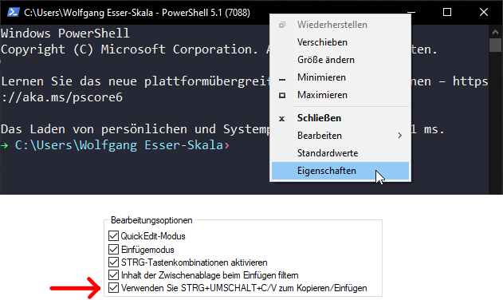

Bash exercises
Connecting to the cluster (Day 1)
The command ssh lets you connect to the cluster. You will need VPN active to be able to connect if you are not using the university LAN or “eduroam” WLAN (when you are working from home).
ssh [username]@corso.came.sbg.ac.at
# For example:
ssh nfortelny@corso.came.sbg.ac.atYou will see a number of different commands over the next days. The key commands are listed at the bottom of this page.
Next you will change your password. Make sure to remember this password, which you will you throughout this course.
passwdNow we are connected to the cluster. In the following we will explore this file system. Details will be explored in the next lecture of this course. For now, just execute the commands and see if you can make sense of the results.
The cluster has a file system like any computer. Currently you are in your home directory. The current “path” is shown by the following command:
pwdYou can list the content of your home directory using
ls
ls -lDo not confuse the lowercase letter l (as used in ls -l) with the number 1 (“one”).
You can clear the terminal by typing
clearNow, use the up- and down-arrows on your keyboard to look through the history of commands.
Now create a directory:
mkdir day1List content of the directory again:
ls
ls -l # This shows you the home directory (and the day1 directory that is within the home directory)
ls -l day1/ # This shows you the content of the day1 directoryNote: folder and directory mean the same thing. We will use directory from now on.
What does mkdir do? Bring up the manual (press q to exit the manual).
man mkdirNow create some files. There are many ways to create a file.
# Create an empty file in directory "day1"
touch day1/this_file_is_empty.txt
# Write the text "abcdefgh" in a file.
echo "abcdefgh" > day1/letters.txtList files again.
ls
ls -l
ls -l day1/Take a look at the file content.
head day1/*Files and file systems (Day 2)
Permissions
Next, we will use the chmod command (https://en.wikipedia.org/wiki/Chmod). This command uses three digits between 0 and 7 to set the permissions of (i) the user, (ii) the group, and (iii) everyone else. The digit defines the permission, as explained in the following table.
| x | Permission | rwx | Binary |
|---|---|---|---|
| 7 | read, write and execute | rwx |
111 |
| 6 | read and write | rw- |
110 |
| 5 | read and execute | r-x |
101 |
| 4 | read only | r-- |
100 |
| 3 | write and execute | -wx |
011 |
| 2 | write only | -w- |
010 |
| 1 | execute only | --x |
001 |
| 0 | none | --- |
000 |
Now, we will create a test file and then change permissions with chmod. Look at the updated permissions with ls -l after each run of chmod in order to understand what changed.
# Create the file
echo "Hello!" > day2/greeting.txt
ls -l day2
# Change permissions
chmod 711 day2/greeting.txt
ls -l day2
chmod 722 day2/greeting.txt
ls -l day2
chmod 733 day2/greeting.txt
ls -l day2
chmod 744 day2/greeting.txt
ls -l day2
chmod 755 day2/greeting.txt
ls -l day2
chmod 766 day2/greeting.txt
ls -l day2
chmod 777 day2/greeting.txt
ls -l day2
chmod 700 day2/greeting.txt
ls -l day2
man chmodExercises
- Create a new directory called
secretswithin in the directory~/day2. - Enable full access to this directory for the owner of the directory, read access for the group, and no access for others
Getting files
Make sure you are in your home directory.
pwd
cd ~/
# same as "cd " or "cd ~", since the default value
# for the dir argument is HOME (see "man cd")
pwdObtain the list of gRNAs.
# look at the man pages of the following commands – what is their purpose?
man mv
man cp
# now try it
mv /resources/bash/gRNAs.txt ~/ # this will not work
cp /resources/bash/gRNAs.txt ~/ # this works
# Why does mv not work? Look at file permissions:
ls -l /resources/bash/gRNAs.txt
ls -l ~/gRNAs.txtNow explore the copied file.
head gRNAs.txt
head -5 gRNAs.txt
tail -5 gRNAs.txt
less gRNAs.txt
more gRNAs.txt
# Count the number of lines
wc -l gRNAs.txtYou may be used to a workflow where you first copy a file (e.g., Ctrl+C), then go to the destination directory, and paste it there (e.g., Ctrl+V). By contrast, the copy command cp does both the copying and pasting.
Exercises
Copy the file gRNAs.txt from your home directory into the directory day2. Then rename the copied file in this directory to gRNAs_exercise.txt.
Editing in nano
Now add a line at the end of the file gRNAs.txt that is located in your home directory, adding the gRNA sequence “ACTGACTG”. Use the nano editor for this purpose. To quit the nano-editor you need to press Ctrl+X. Then type y+Enter to save the changes. Nano commands are shown in the editor and can be found on the internet. A list is provided below.
Nano commands:
| Command | Function |
|---|---|
| ctrl+r | read/insert file |
| ctrl+o | save file |
| ctrl+x | close file |
| alt+a | start selecting text |
| ctrl+k | cut selection |
| ctrl+u | uncut (paste) selection |
| alt+/ | go to end of the file |
| ctrl+a | go to start of the line |
| ctrl+e | go to end of the line |
| ctrl+c | show line number |
| ctrl+_ | go to line number |
| ctrl+w | find matching word |
| alt+w | find next match |
| ctrl+\ | find and replace |
nano gRNAs.txtNow use nano to modify the shell to make things prettier. To do so change the file .bash_profile. This file contains settings for each user (the naming is just by convention). It starts with a ., which for Linux means the file is hidden.
nano ~/.bash_profile
# This creates the file and also opens it in nanoAdd the following lines to .bash_profile in nano, then exit the file and save it - see the commands above.
In Windows PowerShell, copy/paste works best if you enable the option to do so via Ctrl+Shift+V, as shown below. 
if [ -x /usr/bin/dircolors ]; then
test -r ~/.dircolors && eval "$(dircolors -b ~/.dircolors)" || eval "$(dircolors -b)"
alias ls='ls --color=auto'
alias grep='grep --color=auto'
fiThe changes we added to .bash_profile will come into effect next time you log in. To also activate them for your current login, you can source the file, executing the commands stored within.
ls -l *
source ~/.bash_profile
ls -l *Also, notice the difference in ls commands to show hidden files (like .bash_profile).
ls -l
ls -alIf your grade sheet does not show that the content of .bash_profile is correct but it still works, then leave it. There may be a small difference in between your version and the expected one that does not impact the functionality.
Zipped files
Now let’s download all human gene sequences from Ensembl. Download the file to your home directory.
man wget
wget http://ftp.ensembl.org/pub/release-103/fasta/homo_sapiens/cds/Homo_sapiens.GRCh38.cds.all.fa.gzIf the above fails, then you can also copy the file from the resources directory into you home directory.
cp /resources/bash/Homo_sapiens.GRCh38.cds.all.fa.gz ~/To make sure you have the entire file properly downloaded, compare the MD5 hash of the file. MD5 hash functions are a compact digital fingerprint of a file. The MD5 hash of the file should be b16d46bf09c3b8b7909624f1e6c414ce.
md5sum ~/Homo_sapiens.GRCh38.cds.all.fa.gz
md5sum /resources/bash/Homo_sapiens.GRCh38.cds.all.fa.gzUse the du command to determine the file size.
du Homo_sapiens.GRCh38.cds.all.fa.gz
# the -h argument displays the file size in a human-readable format
du -h Homo_sapiens.GRCh38.cds.all.fa.gzHave a look at this file.
head Homo_sapiens.GRCh38.cds.all.fa.gzThis doesn’t look great. Remember to clean up your terminal.
clearThe above file is zipped. Now unzip it.
gunzip -c Homo_sapiens.GRCh38.cds.all.fa.gz
# This command will run through the entire file which is very long.
# Press Ctrl+C to stop the command.
man gunzip
# -c --stdout --to-stdout
# Write output on standard output; keep original files unchanged.
# If there are several input files, the output consists of a sequence
# of independently compressed members. To obtain better compression,
# concatenate all input files before compressing them.Again, remember to clean up your terminal.
clearCan we use head on the unzipped output? Yes - this is done using a pipe.
Pipes
Linux pipes enables you to pass the output of one command to another command.
| Pipe command | Function |
|---|---|
cmd < file |
use file as input for command cmd |
cmd > file |
write output to file |
cmd >> file |
append output to file |
cmd 2> stderr |
write error output to file |
cmd &> file |
send output and error to file |
cmd1 | cmd2 |
send output of cmd1 to cmd2 |
Let’s have a look at the first few lines of this file.
gunzip -c Homo_sapiens.GRCh38.cds.all.fa.gz | headSome programs let you look at decompressed output, for example
zless Homo_sapiens.GRCh38.cds.all.fa.gz
# very similar to:
gunzip -c Homo_sapiens.GRCh38.cds.all.fa.gz | lessNow we can also count the number of lines in this file:
gunzip -c Homo_sapiens.GRCh38.cds.all.fa.gz | wc -lExercises
Place the following files into the directory ~/day2, using pipes:
- Store the number of lines of
Homo_sapiens.GRCh38.cds.all.fa.gzinto the filelineNumber.txt. - Write the first 15 lines of
Homo_sapiens.GRCh38.cds.all.fa.gzinto the filelines1.txt. - Write the 31th to 35th line of
Homo_sapiens.GRCh38.cds.all.fa.gzinto the filelines2.txt. - Store the size of
Homo_sapiens.GRCh38.cds.all.fa.gzin Megabytes into the filesize.txt.
Patterns and regular expressions (Day 3)
File pattern matches
Commands can be executed on multiple files at the same time using pattern matches (we have used this already above).
ls -l
ls -l *
ls -l day*
wc -l *
wc -l *.gz| Description | Pattern |
|---|---|
| Match zero or more characters | * |
| Match any single character | ? |
| Match any of the characters in a set | [...] |
| Match zero or one occurrences of the patterns (extglob) | ?(patterns) |
| Match zero or more occurrences of the patterns (extglob) | *(patterns) |
| Match one or more occurrences of the patterns (extglob) | +(patterns) |
| Match one occurrence of the patterns (extglob) | @(patterns) |
| Match anything that doesn’t match one of the patterns (extglob) | !(patterns) |
Simple regular expressions
Regular expressions can be executed on file names but also content within files. Below is the example from the PDF presented during the lecture.
The file sample needs to be copied to your home directory from the directory /resources/bash.
cat sample
grep ^a sample
grep -E p\{2} sample
grep "a\+t" sample
sed "s/a/XXX/g" sample| Descriptions | Symbol |
|---|---|
| replaces any character | . |
| matches start of string | ^ |
| matches end of string | $ |
| matches up zero or more times the preceding character | * |
| Represent special characters | \ |
| Groups regular expressions | () |
| Matches up exactly one character | ? |
Checking the nucleotides in the Ensembl fasta file
Now let’s use regulare expressions to explore the fasta file. Have a look at the first few lines.
gunzip -c Homo_sapiens.GRCh38.cds.all.fa.gz | head -50We expect all DNA sequences to be made up of A, C, T, and Gs. Now, we will verify this. First, we will get all DNA-sequences from this file, excluding lines starting with a > (in a FASTA files, these lines are the lines describing the sequence; see https://en.wikipedia.org/wiki/FASTA_format).
gunzip -c Homo_sapiens.GRCh38.cds.all.fa.gz | head -500 | grep -v ">"
# from "man grep":
# -v Invert the sense of matching, to select non-matching lines.Next we will use tr to delete newline characters. This will place all sequences in one (very long) line.
gunzip -c Homo_sapiens.GRCh38.cds.all.fa.gz | head -500 | grep -v ">" | tr -d '\n'Next we place every character on a different line.
gunzip -c Homo_sapiens.GRCh38.cds.all.fa.gz | head -500 | grep -v ">" | tr -d '\n' | grep -o .Finally, we want to remove repetition, to only see the unique nucleotides. To do so, we have to first sort the lines and then make them unique.
gunzip -c Homo_sapiens.GRCh38.cds.all.fa.gz | head -500 | grep -v ">" | tr -d '\n' | grep -o . | sort | uniq
# what happens if we only make them unique?
gunzip -c Homo_sapiens.GRCh38.cds.all.fa.gz | head -500 | grep -v ">" | tr -d '\n' | grep -o . | head -20
gunzip -c Homo_sapiens.GRCh38.cds.all.fa.gz | head -500 | grep -v ">" | tr -d '\n' | grep -o . | head -20 | uniq
gunzip -c Homo_sapiens.GRCh38.cds.all.fa.gz | head -500 | grep -v ">" | tr -d '\n' | grep -o . | wc -l
gunzip -c Homo_sapiens.GRCh38.cds.all.fa.gz | head -500 | grep -v ">" | tr -d '\n' | grep -o . | uniq | wc -l
gunzip -c Homo_sapiens.GRCh38.cds.all.fa.gz | head -500 | grep -v ">" | tr -d '\n' | grep -o . | sort | uniq | wc -lExercises
- Create a directory
day3in your home directory. - Count the number of A, C, T, and G of the DNA sequences of the first 1000 lines of file
Homo_sapiens.GRCh38.cds.all.fa.gz. - Store each number in a file called
nt_A.txt,nt_C.txt,… in the directoryday3.
Reformatting the Ensembl fasta file
Next, we will reformat the fasta file, such that every entry is on one line and the DNA sequence is at the end of the line.
Remind ourselves of how this file looks like:
gunzip -c Homo_sapiens.GRCh38.cds.all.fa.gz | head -500In the original format, the > separates different entries and sequences are in the lines below the line with >. First, we will remove newline characters that separate the sequences. To remove the newline characters, we will use the sed command.
gunzip -c Homo_sapiens.GRCh38.cds.all.fa.gz | head -500 | sed -zE 's/([ACTG])\n([ACTG])/\1\2/g'Let breack this up:
s///tells sed to substitute.s///gtells sed to substitue globally - replacing each occurance ofx.s/x/y/gmeans we substitutexbyy.([ACTG])matches any of the four letters A, C, T, and G. The brackets()tell the regex to store the match for later (see\1and\2below). If we want to use this storing we need to usesed -E.\nmatches the newline.\1is going to be replaced by the first match within the first brackets(). Therefore, here it will be replaced by the nucleotide before the new line.\2is going to be replaced by the second match within the second brackets(). Therefore, here it will be replaced by the nucleotide after the new line.- So ultimately the nulceotide before and after the newline are stored, and then they are written again but without the newline.
Next, we will remove the newline character that separates the sequence from the line with the entry information, which starts with >, and replace it with seq:.
gunzip -c Homo_sapiens.GRCh38.cds.all.fa.gz | head -500 | sed -zE 's/([ACTG])\n([ACTG])/\1\2/g' | sed -z 's/\n[^>]/ seq:/g'Explanation:
[^>]means to NOT match>.\n[^>]replaces all newline characters that are NOT before a>.
We developed the above approach on the first lines. Now run it an the full file. This may take a couple of minutes. The gzip command will compress the results. The > will store it in a new file GRCh38_reformatted.gz. The reformatted file should end up in your home directory.
gunzip -c Homo_sapiens.GRCh38.cds.all.fa.gz | sed -zE 's/([ACTG])\n([ACTG])/\1\2/g' | sed -z 's/\n[^>]/ seq:/g' | gzip > GRCh38_reformatted.gzExplore the generated file.
gunzip -c Homo_sapiens.GRCh38.cds.all.fa.gz | wc -l
gunzip -c Homo_sapiens.GRCh38.cds.all.fa.gz | grep ">" | wc -l
gunzip -c GRCh38_reformatted.gz | wc -l
zless GRCh38_reformatted.gzIdentifying gRNA matches
Now, with the newly formatted file, we can easily identify genes in the database that match a specific gRNA.
gunzip -c GRCh38_reformatted.gz | head -30We check that all entries have gene symbols:
gunzip -c GRCh38_reformatted.gz | grep "gene_symbol" | head -30
gunzip -c GRCh38_reformatted.gz | grep -v "gene_symbol" | head -30
# remember: grep -v means to *not* matchNext we extract those sequences matching the guide “TTAAGACA”:
gunzip -c GRCh38_reformatted.gz | grep "seq:[ACTG]*TTAAGACA" | head -30 Now we extract the gene symbols of these matches. First we match all text (.*) from the beginning of the line (^) before the text gene_symbol and delete it.
gunzip -c GRCh38_reformatted.gz | grep "seq:[ACTG]*TTAAGACA" | sed 's/^.*gene_symbol://g' | head -30Then we also remove all text after the gene symbol, in this case the space and everything (.*) after that until the end of the line ($).
gunzip -c GRCh38_reformatted.gz | grep "seq:[ACTG]*TTAAGACA" | sed 's/^.*gene_symbol://g' | sed 's/ .*$//g' | head -30Finally, we get unique gene IDs.
gunzip -c GRCh38_reformatted.gz | grep "seq:[ACTG]*TTAAGACA" | sed 's/^.*gene_symbol://g' | sed 's/ .*$//g' | sort | uniqExercises
Create the following files in the directory day3:
- Write all entries with sequences matching the guide “GCGGTTTC” into the file
guideMatch_GCGGTTTC.txt. - Write the count of entries with sequences starting with “TGC” into the file
count_TGC.txt. - Write the count of entries of gene “MMP2” into the file
count_MMP2.txt. Note: Do not count genes MMP20, MMP21,… - Write the count of unique genes whose symbol starts with “RPL” into the file
count_RPL.txt. - Write the count of all unique protein coding genes into the file
count_protein_coding.txt.
Loops and variables (Day 4)
Variables
Variables can hold information which can be passed to different programs.
x="test variable"
echo $x
echo $x | sed 's/a//g'Now we will write the gRNAs to test and the regexp patterns into variables.
guide=TTAAGACA
echo $guide
pattern="seq:[ACTG]*${guide}"
echo $pattern
gunzip -c GRCh38_reformatted.gz | grep $pattern | head -30
gunzip -c GRCh38_reformatted.gz | grep $pattern | sed 's/^.*gene_symbol://g' | sed 's/ .*$//g' | head -30Loops
We will use while loops. They have the following syntax:
while [condition] do [something] doneDifferent types of loops exist (https://ryanstutorials.net/bash-scripting-tutorial/bash-loops.php), but those are not important for this course.
The following loop starts with x = 1. It then repeats printing “Welcome … times” and adding +1 to x, until x is greater than 5 (while x is lower or equal to 5 $x -le 5).
x=1
while [ $x -le 5 ]
do
echo "Welcome $x times"
x=$(( $x + 1 )) # syntax to add a number to x
doneImportantly, the loop is ONE construct. Thus when entering while [ $x -le 5 ], the terminal expects additional information, in particular do [...] done. While waiting for additional input, the terminal will start lines with >. Keep entering the do, etc in those lines. The final results will look like this:
[user]@corso:~$ while [ $x -le 5 ]
> do
> echo "Welcome $x times"
> x=$(( $x + 1 ))
> done
Welcome 1 times
Welcome 2 times
Welcome 3 times
Welcome 4 times
Welcome 5 timesTry to make the above loop count to 10. Or from 10 to 5.
Here are different ways to compare numbers. Assume variable a holds 10 and variable b holds 20 then:
| Operator | Description | Example |
|---|---|---|
-eq |
Checks if the value of two operands are equal or not; if yes, then the condition becomes true. | [ $a -eq $b ] is not true. |
-ne |
Checks if the value of two operands are equal or not; if values are not equal, then the condition becomes true. | [ $a -ne $b ] is true. |
-gt |
Checks if the value of left operand is greater than the value of right operand; if yes, then the condition becomes true. | [ $a -gt $b ] is not true. |
-lt |
Checks if the value of left operand is less than the value of right operand; if yes, then the condition becomes true. | [ $a -lt $b ] is true. |
-ge |
Checks if the value of left operand is greater than or equal to the value of right operand; if yes, then the condition becomes true. | [ $a -ge $b ] is not true. |
-le |
Checks if the value of left operand is less than or equal to the value of right operand; if yes, then the condition becomes true. | [ $a -le $b ] is true. |
You can also use nano to write the code above into a file (for example here: script.sh) and then use the following to execute it:
bash script.shWe can also loop through the content of a file.
while read p; do
echo "$p"
done < gRNAs.txtExercise
Now we will combine the above variables and loopes to test all guides in file gRNAs.txt against all DNA sequences in GRCh38_reformatted.gz. To do so you need the following steps (also see the hints below!!!):
- Use the code above (under Variables) that matches guides against DNA sequences and extracts gene symbols for matched sequences.
- Place this function into the loop that iterates through the file
gRNAs.txt, using the while loop shown above that iterates through a file. - Store all matches (not just the top 30 coming from
head -30) of each guide into a file that is namedresults_${guide}.txt. Place all files into a new directoryday4- ideally already within the loop. - Double-check the results by hand (no points).
- How many files did you just create?
- Look at one of the created files. Is the content what you would expect?
- When you run it with only one guide (without the loop) and compare to the results generated within the loop: Do you get the right genes for this guide? Do you get the correct number of genes for this guide?
Hint: To complete the exercise, you can use the following code to extract genes for one guide. In this code, the guide needs to be defined first using guide=[...]. However, when placing this code block inside of the loop, you don’t define the guide - it is defined by the loop.
echo $guide
pattern="seq:[ACTG]*${guide}"
echo $pattern
gunzip -c GRCh38_reformatted.gz | grep $pattern | sed 's/^.*gene_symbol://g' | sed 's/ .*$//g' | sort | uniqPlace the above in the loop that iterates throught the gRNA file.
while read guide; do
echo $guide
done < gRNAs.txtRemember: you need to save the result of the last line (gunzip ... | uniq) to a file results_${guide}.txt.
Comparing files
Have a look at the files we generated.
cd ~/day4
ls results_*.txt
ls -l results_*.txt
head results_*.txt
wc -l results_*.txtNow let’s compare results in a pairwise manner. The command comm will provide the gene symbols unique to one or the other file, plus the intersection of both.
cd ~/day4
comm results_AAGTTGGC.txt results_GCCATACA.txt
comm -12 results_AAGTTGGC.txt results_GCCATACA.txtThe count of genes in the overlap (intersection) can be stored in a new variable. To store results of an expression in a new variable, place the expression into parenthesis x=$().
cd ~/
guide1=AAGTTGGC
guide2=GCCATACA
overlap=$(comm -12 day4/results_${guide1}.txt day4/results_${guide2}.txt | wc -l)
echo "$guide1 $guide2 $overlap"Exercise
Now we will compare each pair of guides to test the overlap of genes. Place the result in the directory day4:
- Use one loop (that iterates through all guides) within a second loop (that also iterates through all guides) to compare the overlap between all pairs of guides (thus, for simplicity, we will compare all pairs of guides also the overlap of each guide with itself).
- Use the
commcommand as shown above to extract the overlap, counting the number of genes, and writing the result into a file namedoverlap_${guide1}_${guide2}.txt. - “Manually” check results (no points):
- How many files did you create? How many did you expect to create?
- Look at one of the created files. Is the content what you would expect?
- Compare individual examples (for example “AAGTTGGC” vs “GCCATACA”). Did you get the right overlap?
Special symbols
- The
(is called aparenthesis - The
[is called asquared bracket(sometimes onlybracket) - The
{is called acurly bracket(sometimes onlybrace) - The
~is called atilde - The
*is called anasterisk
Useful links
Linux for bioinformatics
- https://bioinformaticsworkbook.org/Appendix/Unix/unix-basics-1.html#gsc.tab=0
- https://bioinformaticsworkbook.org/Appendix/Unix/UnixCheatSheet.html#gsc.tab=0
- https://bioinformatics.uconn.edu/unix-basics/#
- https://decodebiology.github.io/bioinfotutorials/
- https://www.melbournebioinformatics.org.au/tutorials/tutorials/unix/unix/
General linux commands
Regular expressions: